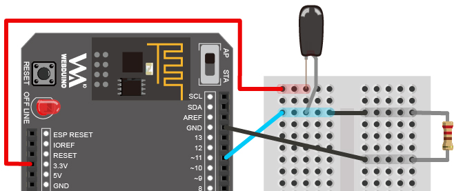
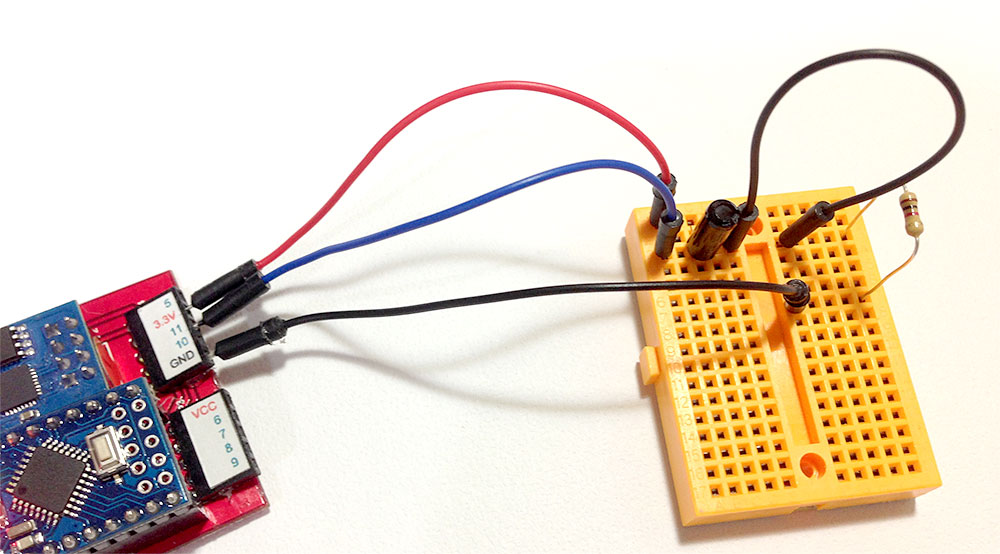
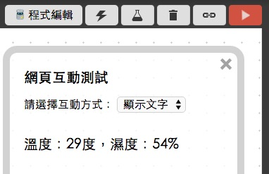
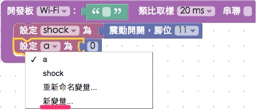

教學範例 11：震動開關改變網頁數值
震動開關的結構如下圖所示，裡頭有一個金屬導電彈簧以及金屬導電腳，金屬彈簧延伸到塑膠外殼外部是一條比較細的金屬線，因此在晃動的時候，內部互相接觸進而短路導電，原理和之前所提到的按鈕類似，只是震動開關利用震動的方式，控制電路的開或關。

範例影片展示
影片對應範例：https://blockly.webduino.io/?page=tutorials/shock-1
接線與實作
震動開關有一粗一細的針腳，粗的針腳接 11，細的針腳接 3.3V，為了避免開關開的時候瞬間短路，在電路裡頭加上一個電阻，按照下圖的接法與 GND 相連，在把震動開關放上麵包板時，可以清楚地看到一粗一細的針腳，不用擔心細的針腳無法感應，與粗的針腳同樣安插進入麵包板內即可。
馬克一號接線示意圖：

Fly 接線示意圖：

實際接線照片：


Webduino Blockly 操作解析
打開 Webduino Blockly 編輯工具 ( https://blockly.webduino.io )，因為這個範例會用網頁「顯示文字」來顯示按鈕開關當下數字，增加以後的數字也會不斷累加出來，所以要先點選右上方「網頁互動測試」的按鈕，打開內嵌測試的網頁，用下拉選單選擇「顯示文字」。

把開發板放到編輯畫面裡，填入對應的 Webduino 開發板名稱，開發板內放入震動開關積木，名稱設定為 shock，腳位設定為 11。
放入一個「變數」的積木，選擇「新變量」設定新的變量名稱，並且賦予這個變量數值 0 ( 使用數學式積木 )。

接著放入偵測到震動開關通路的積木，裡面擺入一個數學式，內容為「a = a + 1」，這表示每次偵測到震動開關通電時，a 的數值就會加 1，同時把 a 顯示在網頁裡。

完成後，確認開發板上線 ( 點選「檢查連線狀態」查詢 )，點選紅色的執行按鈕，輕觸震動開關，就會看到數字往上開始累加上去了。( 解答：https://blockly.webduino.io/#-K7A61JY3A5XBRan10Kz )

程式碼解析 ( 完整程式碼、檢查連線狀態 )
HTML 的 header 引入 webduino-all.min.js，目的在讓瀏覽器可以支援 WebComponents 以及 Webduino 所有的元件，如果是用 Blockly 編輯工具產生的程式碼，則要額外引入 webduino-blockly.js。
<script src="https://webduino.io/components/webduino-js/dist/webduino-all.min.js"></script>
<script src="https://webduinoio.github.io/webduino-blockly/webduino-blockly.js"></script>
HTML 裡頭有一個 span，負責顯示文字。
<span id="demo-area-01-show">123</span>
JavaScript 和按鈕開關類似，都是使用 on 的方法，只是裡面如果是 high 就是通電，low 就是斷電，通電時讓 a = a + 1，然後用 innerHTML 來顯示。
var shock;
var a;
boardReady('', function (board) {
board.samplingInterval = 20;
shock = getShock(board, 11);
a = 0;
document.getElementById("demo-area-01-show").innerHTML = a;
shock.on("high",function(){
console.log("high");
a = a + 1;
document.getElementById("demo-area-01-show").innerHTML = a;
});
});
以上就是利用震動開關，來增加數值並顯示在網頁上。
完整程式碼：http://bin.webduino.io/suyam/edit?html,css,js,output
解答：https://blockly.webduino.io/#-K7A61JY3A5XBRan10Kz
震動開關的延伸教學：
Webduino Blockly 課程 10-2：震動按鈕開關改變圖片位置
如果您還想了解更多，可以參考：
2. Blockly 教學：https://goo.gl/Y8sRkl
3. 產品總覽：https://webduino.io/buy.html
4. 露天賣場：http://goo.gl/0Dj9ip

Webduino 學習手冊
Webduino 最豐富的教學網站上線囉，本篇文章已經有新的版本，點選『 』前往閱讀吧。如果想看更完整的教材，可以到 Webduino 學習手冊了解更多資訊。
立即前往